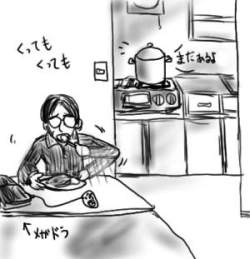
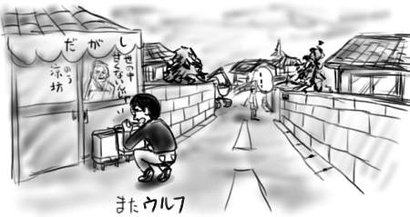

まずは訂正ですが、KRAFTWERKの来日公演は1998年でした。つまり一昨年です。僕が2000年問題だったね！何にせよ、ワイヤーフレームスーツはカッコよすぎです、彼等。
BBSで触れたら気になって仕方がなくなったので、メガドラ引っぱり出して『ジノーグ』をプレイ。あと『エクスランザ』。『エクスランザ』の1面ボスとか、弾の出方が普通じゃないと思う。カートリッジを抜こうと思ったら指を挟んで血豆ができたよ。気をつけよう。
カレーを作り過ぎたので、毎日カレー。毎日３杯は食べているのに、ついに３日目に持ち越しです。どうなってんの！実家から餅を持って帰って来たのですが、餅は冷凍庫のないオレ部屋においては即効カビ状態へと遷移するので毎日が餅曜日(not 高田祐三)！という塩梅で、毎日餅！餅！餅！ついに餅を処分して開放感に満ちあふれたせいで「おせちもいいけどカレーもね」などと単純な発想からハッスルしすぎたのが敗因かと思われる最近です。もっとも「カレーもいいけど餅もね」という風に後戻りはききません。感情はいつだって一方通行です。

明けたね！(かなり前に)
そんなわけでKRAFTWERKの、なんと新譜なEXPO2000なわけですが、ステレオグラムジャケットで登場で相変わらずな音を採用。老けたボコーダー声を響かせております。過去、テクノロジィへの警告という意味でパンクであったKRAFTWERKですが、現代のハイテクに対する確固たる何かを持ち合わせてはおらず、なんとも精力が足りない仙人のようなイメージです、彼等。去年の来日のライブには出かけませんでしたが、やはり箱から飛び出したり自分ソックリのロボが演奏してたりしてたんでしょうか。EXPO2000の内ジャケもそのまんまでワイヤーフレームです。何にせよ、忘れていた当時のカッコヨサを懐かしく思い出すような音盤なのでした。
うどんの国で高校時代の友人達で集うので来い！と命令されたので夕刻から集って来たわけなんですけれども、なんの友人達かというと、SF研究会という体育祭をサボって部室でゲーム(スーファミ)をしたり文化祭でコピー誌を売りつけたりするマッシブでコロッサルにクリティカルな同好会です。結局集まったのが、みさきなな子(主催)とオレとトルーパー女子、さらに部屋を提供させられた悪徳DJ(not SF研)の４人です。
悪徳DJの部屋は、Prodigy仕様(シール貼付)のミキサーやらAFX仕様(シール貼付)のCDスクラッチマシーンなどが並び、良徳が砂原のFISHMANSでPOLYSICSなどのポスター部屋でした。
そこで主にやったことと言えば、ドリキャスで『ジョジョ』をプレイしたり、お互いにどちらが汚臭いかを罵りあったり、ドリキャスで『キャリバー』をプレイしたり、お互いにどちらが汚臭いかを罵りあったり、ドリキャスで『シェンムー』をプレイしたり、お互いにどちらが汚臭いかを罵りあったり、車で屋島に出かけて夜景を見ようと展望台へ登り、備え付けの双眼鏡にコインを入れて覗いたら埠頭に向けて大量のパトカーと救急車がじゃんじゃんと集っているところだったり、「エフェクト」と罵られたり、車内でどちらが汚臭いか罵りあったり、DJ部屋に戻ってドリキャスで『ジョジョ』をプレイしたり、お互いにどちらが汚臭いがを罵りあったり、ドリキャスで『キャリバー』をプレイしたり、車で屋島に出かけたり(with 朝日)、ファミレスで朝食を取ろうとしたらみさきなな子がサーロインステーキを頼んだり、ファミレスでお互いにどちらが汚臭いかを罵りあったり等で、大変にハードミニマルな一夜だった。もう呼ぶな！
『シェンムー』は大変おかしい(頭が)ゲームですよ。
父親が殺されたのに、祖母から日々おこづかいを貰いながら、神社でこっそりと子猫を育てたり、お供物の油揚げや煮干しを子猫に与えたり、駄菓子屋の前でガチャガチャに精を出したり、飽きたら自動販売機でジュース買ったり、駄菓子屋でスナックを買ってくじを引いて人形を当てたり、街へ繰り出してゲーセンで遊んだり、夜になったのでコンビニに入ってお菓子を買って家に戻ったりするのを延々とくり返すことができます。主人公は何をするにしても自分に言い聞かせるように独り言をしゃべりまくり(「1回100円か。遊んでいくか。」等)ますし、「お父さん亡くしてからああなのよ、大変ねぇ」など噂を操るゲーム！(プレイヤが勝手に)
ストーリーを進めるために会話が必要なヒロインは朝から夜まで街角の電信柱の隣で立ち尽くしていたり、少年が自宅の前で直立不動で立ち尽くしていたり、噂のアクションシーンが「少年少女のボール遊びの流れ玉を避ける」というものであったり、失敗すると「取り損なったボールが跳ね返って少女に当たり、少女が泣きながら家に帰ってしまう」など、ストーリーに関係ないところでゲームが進行します。
何より、"僕の記憶から抽出したかのような"ブロック塀のテクスチャや舗装道路、涙が出るくらいにボロっちい４畳半スナック(夜だけ経営)の壁や店内の演歌BGMなど、70億かけてこういうのを！と言った感じの80年代の枯れススキ感が堪能できます。必見！
ポリゴンたけしの挑戦状＋グルーヴ地獄V。
